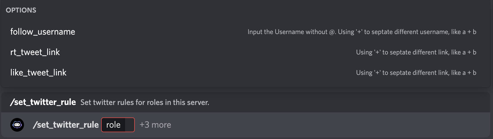
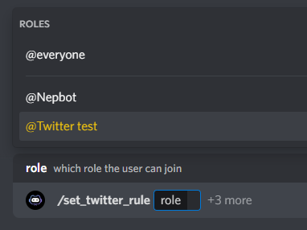
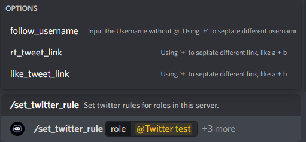
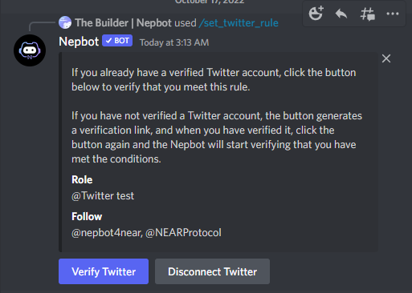
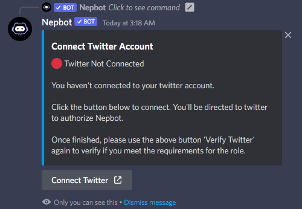
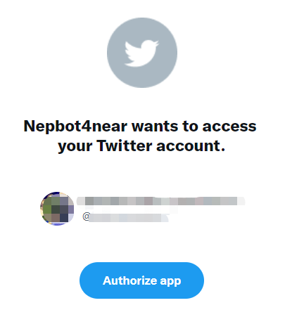
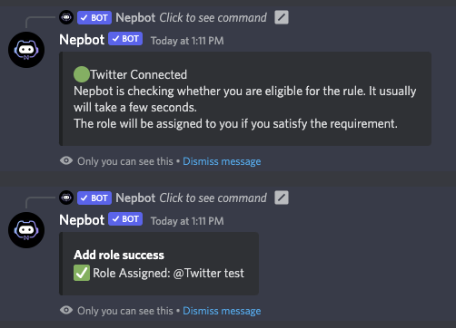
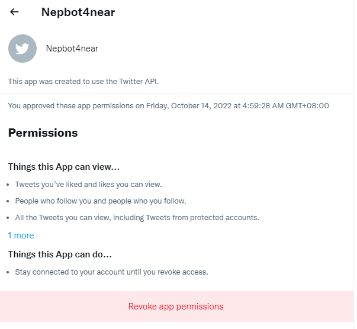

1. Verify Twitter
⚠️ This command is only accessible to server owners.
⚠️ Once the Twitter Rule is created, server members can directly interact with the button under the ‘Twitter rule’ message.
Other than tokens, Nepbot can also verify your twitter account and activities and assign roles accordingly.

1.1. What kinds of Twitter rules can I create for a role?
- Follow one or several twitter account
- Retweet one or several tweets
Like one or several tweet
To create a Twitter Rule Verification, you can start with the command
/set_twitter_ruleSelect a role. Users will automatically get the role if they meet the specified requirements after twitter verification.

Then set Twitter rules required to get this role. There’re three types of rules:
- follow_username: Follow Twitter account(s). Input twitter handle(s) without ‘@’ here.
- rt_tweet_link: Retweet tweet(s). Input the twitter link(s) here.
like_tweet_link: Like tweet(s). Input the twitter link(s) here.
You can add more than one rules, for example, the requirements could be both follow accounts and retweet the tweet.
You can add more than one accounts/tweets for each type of rule by using ‘+’ in between, for example, follow_username: nepbot4near+NearProtocol

Press enter when you set up the rules.
You will see a public message posted by Nepbot with two buttons
- Verify Twitter
Disconnect Twitter

Server members can now click on ‘Verify Twitter’ to verify and get the roles accordingly.
If the user verifies Twitter in this server for the first time, the user will receive a link to Twitter authorization page, where the user will need to authorize Nepbot from their Twitter.


Once authorized, Nepbot will automatically check if you meet the requirements and automatically assign you with the corresponding role.
If you have connected to your twitter before in this server, you can simply click on ‘Verify Twitter’ and the bot will automatically check if you’re eligible to this role.

1.2. Please note that:
- To use Twitter verification, you must make sure your NEAR wallet is logged in.
- No need to verify the wallet through Nepbot
- This is to ensure **the link cannot be used by others
You can always choose to disconnect your Twitter from your discord by click on ‘Disconnect Twitter’. We will delete the data instantly.
You can also deauthorize Nepbot on Twitter in More - Settings and Support - Security and account access - Apps and sessions - Connected apps - Find ‘Nepbot4near’ and Revoke app permissions.
